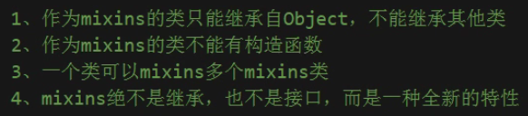

Dart语言基础
Dart常用语法
官方详细教程
1. 变量
| var a = 1; // 变量（可以自推断类型）
const b = 2; // 编译时就确定好值，不能再被修改
final c = b; // 只能初始化一次，不能再被修改
dynamic d = 'name'; // 动态类型
int cnt; // 不管是什么类型，没有初始化的默认值为null
|
2. 内建类型
-
Number：包含int和double
-
String：
1
2
3
4
5
6
7
8
9
10
11
12
13
14
15 | // 内嵌表达式
var s = 'string interpolation';
assert('Dart has $s, which is very handy.' ==
'Dart has string interpolation, ' +
'which is very handy.');
// 多行字符串
var str = '''
hello
world
!
''';
// 用r前缀创建原始raw字符串(输出任何字符，包括转义字符)
var s = r"In a raw string, \n isn't special."
|
-
Boolean：if或assert中只能包含值为boolean的表达式
-
List (也被称为 Array)：var list = const [1,2,3];
-
Set：
| var set = {1,2,3};
var nullSet = <int>{}; // 不加<int>会认为是map类型
|
| var mp = {
'a':'hello',
'b':'world',
'c':'!',
};
mp['d']='>^<';
|
- Rune (用于在字符串中表示 Unicode 字符)
| var love = Runes('\u2665'); // 爱心
Runes input = new Runes(' \u{1f605} '); // 笑脸
|
- Symbol：用于按名称引用标识符的 API ——
#bar、#radix
3. 函数
普通函数：
| bool isNoble(int atomicNumber) { // 类型声明可以省略
return _nobleGases[atomicNumber] != null;
}
// 【箭头语法】，只有一行的函数可以改为：
bool isNoble(int atomicNumber) => _nobleGases[atomicNumber] != null;
|
匿名函数：
| var list = ['apples', 'bananas', 'oranges'];
list.forEach((item) {
print('${list.indexOf(item)}: $item');
}); //(){}是匿名函数
// 只有一条语句的函数可以用=>简化
list.forEach( (item) => print('${list.indexOf(item)}: $item') );
|
自执行方法：
| (()=>{
print("我是自执行方法");
})();
// 传参
((int n)=>{
print("传入参数："+n);
})(12);
|
4. 运算符
5/2的值是2.5，5~/2的值才是2
类型判定运算符
| Operator |
Meaning |
as |
Typecast (也被用于指定库前缀) |
is |
True if the object has the specified type |
is! |
False if the object has the specified type |
| // Type check
if (emp is Person) {
emp.firstName = 'Bob';
}
(emp as Person).firstName = 'Bob';
|
赋值运算符
| // 将值赋值给变量a
a = value;
// 如果b为空时，将变量赋值给b，否则b的值保持不变
b ??= value;
// name 为空时返回'Guest'
String playerName(String name) => name ?? 'Guest';
|
级联运算符..
1
2
3
4
5
6
7
8
9
10
11
12
13
14
15
16 | querySelector('#confirm') // 获取对象。
..text = 'Confirm' // 调用成员变量。
..classes.add('important')
..onClick.listen((e) => window.alert('Confirmed!'));
// 相当于
var button = querySelector('#confirm');
button.text = 'Confirm';
button.classes.add('important');
button.onClick.listen((e) => window.alert('Confirmed!'));
// 在返回对象的函数中谨慎使用级联操作符。
//sb.write() 函数调用返回 void， 不能在 void 对象上创建级联操作。
var sb = StringBuffer();
sb.write('foo')
..write('bar'); // Error: 'void' 没哟定义 'write' 函数。
|
assert
如果 assert 语句中的布尔条件为 false ， 那么正常的程序执行流程会被中断。
assert 语句只在开发环境中有效， 在生产环境是无效的； Flutter 中的 assert 只在 debug 模式中有效。
5. 类
- 所有的类都继承于
Object
p?.y = 4;表示 p 可能为空- 构造函数的
new可省略
- 没有
public、private、protected等关键字，变量前加上_表示是私有的：var _param = 2;
命名构造函数（构造函数不能被继承）
| class Point {
num x, y;
Point(this.x, this.y);
// 命名构造函数
Point.origin() {
x = 0;
y = 0;
}
}
|
Getter和Setter
1
2
3
4
5
6
7
8
9
10
11
12
13
14
15
16
17
18 | class Rectangle {
num left, top, width, height;
Rectangle(this.left, this.top, this.width, this.height);
// 定义两个计算属性： right 和 bottom。
num get right => left + width;
set right(num value) => left = value - width;
num get bottom => top + height;
set bottom(num value) => top = value - height;
}
void main() {
var rect = Rectangle(3, 4, 20, 15);
assert(rect.left == 3);
rect.right = 12;
assert(rect.left == -8);
}
|
抽象方法
| abstract class Doer {
// 定义实例变量和方法 ...
void doSomething(); // 定义一个抽象方法。
}
|
抽象类
| // 这个类被定义为抽象类，
// 所以不能被实例化。
abstract class AbstractContainer {
// 定义构造行数，字段，方法...
void updateChildren(); // 抽象方法。
}
|
接口用implements，继承用extends
枚举类
| enum Color { red, green, blue }
// 获取所有枚举值列表（ list ）
List<Color> colors = Color.values;
assert(colors[2] == Color.blue);
|
mixins

实现类似多继承功能：
1
2
3
4
5
6
7
8
9
10
11
12
13
14
15
16
17
18
19
20
21 | class A{
void printA(){
print("A");
}
}
class B{
void printB(){
print("B");
}
}
class C with A,B{
}
void main(){
var c = new C();
c.printA();
c.printB();
}
|
泛型：
| T getData<T>(T data){
return data;
}
|
最后更新: July 16, 2022 10:57:39